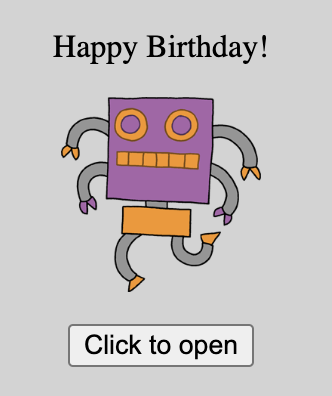
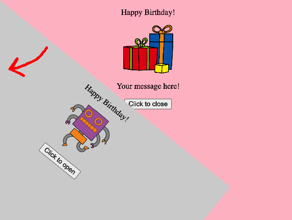
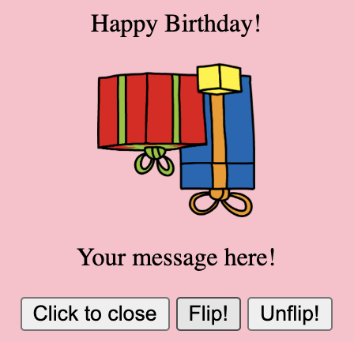

Make a Card (CSS ID/class, JavaScript)
In this lab, we'll use CSS selectors to apply style sparingly, to certain elements that we request. We'll also see how JavaScript can be used to make a website respond to a user's actions. Unlike HTML and CSS, which are used to organize and style your website content, JavaScript is a programming language, like Snap! or Python. JavaScript lets us manipulate HTML tags and CSS styling in a very flexible way.
-
Visit replit.com/@atr6/MakeACard to open a starter project. Click the "Fork" button to make your own copy.

It's a birthday card! Test it out: click the button a few times. -
Open
index.htmland have a look. The card uses three new HTML tags:<script>,<div>, and<button>.
Thescripttag adds JavaScript code to our website. The code lives in the filescript.js, which you can click and view in the left sidebar (go ahead and do so). The code changes our website's HTML code, in real time, in response to a user's action (clicking the button).
Thedivtags help organize the HTML content. Here, they distinguish the outside versus the inside of the card.
Thebuttontags add, well, buttons that you can click. -
The card says "Happy Birthday!" twice: once on the outside, and once on the inside. Change one of the messages to say something different. (Which of your friends has a birthday coming up soon?)
-
The card shows a robot on the front. Try changing it to another image. In the left sidebar, click the "media" folder to see what images you can use. You can add your own images too.
-
The images are kind of small. Edit the
style.cssfile to make all of the images bigger. There are many different ways to do so. Here are some examples: adjust the numbers until you get a size that you like.img { width: 1000px; }img { width: 30%; }img { width: auto; }img { height: 200px; } -
Let's look at the other parts of the CSS style sheet. Notice the hashtags (
#symbol)? The hashtag is an "ID selector". It picks out the HTML tag with a matchingidattribute, and applies our requested styles to that tag. Let's give it a try. Change the text color inside the card to make it red, as shown below:
-
Refresh your webpage and open the card. What happened?
Notice: we modified the style for the<div id="inside">tag, without requesting any style for the<p>tag. We say that the child<p>tags inherited the text color of their parent<div id="inside">tag. This works for some properties, likecolorandfont-size, but not all others. You can experiment or use Google to figure out what properties can be inherited. -
Let's explore what the other CSS properties do by trial and error. The card's outside has
z-index: 1and the inside hasz-index: 0. Swap the numbers, so the outside z-index is 0 and the inside is 1. Refresh your website and click the button. What happens? Then, undo your change.
Let's also look at theposition: absoluteproperty, which is the same for both inside and outside. Change it toposition: static(this is the default when nopositionis specified) for both inside and outside. Refresh your website. What happens? Then, undo your change. -
The card is unusual! It opens by pivoting about the top-left corner. Most greeting/birthday cards open by unfolding on the left side instead. Let's first understand how the card opens, then change it.
 -
Look at the
script.jsfile. It defines two functions calledopen_card()andclose_card(), which toggle the outside of the card between two states:<div id="outside">and<div id="outside" class="open-card">. We click the button to invoke each of these two functions.
Theclassattribute is another way to label our HTML tags, similar to theidattribute. Many different tags can have the sameclass, whereas in contrast, only one HTML tag can have a givenidattribute. (we can't have have twodivtags with the sameid="outside").
Go back to thestyle.cssfile. Notice the dot (".") before the.open-cardline? This dot is called a CSS class selector. It picks out all the tags withclass=open-cardand applies the CSS propertytransform: rotateZ(180deg);to those tags. When we click the button to open the card, (i) the<div id="outside">tag gets changed to<div id="outside" class="open-card">, (ii) the transform gets applied, (iii) the outside of the card rotates out of the way, so that we can see the inside of the card.
-
Now we know how the card opens! Let's make some changes. Change how the card opens by using
rotateXorrotateY, instead ofrotateZ. Give it a try. Which one unfolds the card in the "correct" or "traditional" way? You can also change180degto something else, maybe45degor90deg?
Then, change how fast the card opens: modifytransition: 1s;to use10sinstead, or maybe0.5s. Test it out and see what happens.
Visit https://developer.mozilla.org/en-US/docs/Web/CSS/transform to see even more ways to transform HTML elements.
-
Let's make our card even fancier! Add two new buttons inside the card: one button should flip the presents image upside-down, and the other button should flip it right-side up again.
You will need to modify all three files:index.html,style.css, andscript.jsusing the following snippets of code.<button onclick="flip()">Flip!</button>id="presents"#presents { transition: 5s; }<button onclick="unflip()">Unflip!</button>.flipped { transform: rotateX(180deg); }function flip() { document.getElementById('presents').className = 'flipped'; }function unflip() { document.getElementById('presents').className = ''; } -
The final product should look something like this:
 -
You can go farther make a customized card for a friend or family member! Maybe you could change more colors and fonts? Change the color of the button? Add more text, images, or even embed a YouTube video?
Credits: this lesson was adapted from Toni Scullion's lesson plan, in turn adapted from a Raspberry Pi Foundation project.